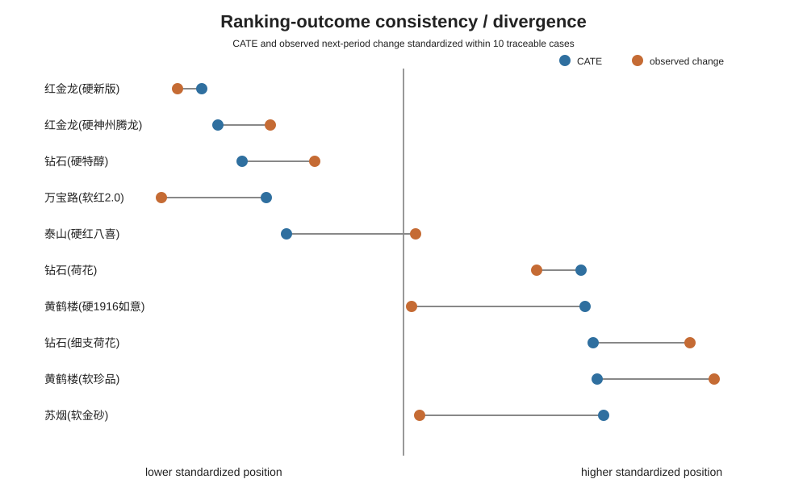
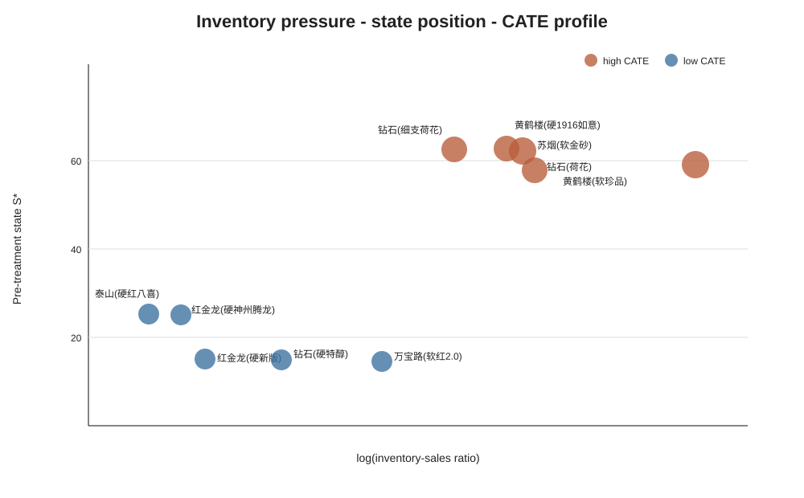

为检验模型结果能否落到具体经营对象，本章不再使用抽象的“高、中、低敏感”作为主要呈现方式，而选取10个可追溯代表性品规，逐一对照代理收缩事件月份、处理前经营状态、CATE排序与下一期实际状态变化。由于现有数据未包含正式审批日志和具体减量幅度，本文不将代理事件写成真实调控指令，也不虚构减量比例。
案例来自高排序和低排序两端各5个品规，覆盖一至四类烟和2025—2026年多个事件月份。选择标准不是挑选“效果最好”的案例，而是保留排序极端且经营字段完整的观测。因此，苏烟(软金砂)等高排序但下一期变化有限的案例，以及泰山(硬红八喜)低排序但下一期仍小幅改善的反例均予以保留。
| 月份 | 品规 | 类别 | CATE | S* | 顺价 | 存销比 | 下期变化 | 经营解释 | 后续建议 |
|---|---|---|---|---|---|---|---|---|---|
| 202505 | 苏烟(软金砂) | 一类烟 | 4.066 | 61.90 | 1.179 | 2471.87 | 0.185 | 状态位势较高且库存承压 | 保留排序，进入观察复核 |
| 202503 | 黄鹤楼(软珍品) | 一类烟 | 4.014 | 59.33 | 1.226 | 16696.12 | 30.248 | 状态位势较高且库存承压 | 优先复核并连续观察 |
| 202504 | 钻石(细支荷花) | 一类烟 | 3.980 | 62.20 | 1.165 | 812.02 | 28.678 | 高排序且存在顺价修复空间 | 优先复核并连续观察 |
| 202510 | 黄鹤楼(硬1916如意) | 一类烟 | 3.890 | 62.34 | 1.179 | 2188.00 | 0.115 | 状态位势较高且库存承压 | 不据单期变化扩大收缩 |
| 202506 | 钻石(荷花) | 一类烟 | 3.872 | 58.53 | 1.161 | 2715.68 | 13.271 | 状态位势较高且库存承压 | 优先复核并连续观察 |
| 202602 | 红金龙(硬新版) | 四类烟 | -2.507 | 14.99 | 1.124 | 71.13 | -24.881 | 初始状态偏低 | 暂缓进一步收缩 |
| 202602 | 红金龙(硬神州腾龙) | 三类烟 | -2.397 | 25.25 | 1.136 | 59.14 | -16.328 | 初始状态偏低 | 暂缓进一步收缩 |
| 202511 | 钻石(硬特醇) | 四类烟 | -2.083 | 14.88 | 1.124 | 138.78 | -9.617 | 初始状态偏低 | 优先核查缺货与满足率 |
| 202606 | 万宝路(软红2.0) | 二类烟 | -1.692 | 14.71 | 1.118 | 456.08 | -27.060 | 初始状态偏低 | 暂缓进一步收缩 |
| 202512 | 泰山(硬红八喜) | 三类烟 | -1.347 | 25.29 | 1.136 | 38.54 | 0.917 | 低排序但出现小幅改善反例 | 暂缓自动动作，维持观察 |
注：事件月份由论文既定代理规则识别；“下一期变化”为观测事实，不等于供给收缩的无偏因果效应。后续建议仅依据现有经营画像和排序信息形成复核方向，不替代业务审批。
5个高排序案例的CATE均在3.87以上，处理前S*集中于58.53～62.34。其中黄鹤楼(软珍品)、苏烟(软金砂)、钻石(荷花)等同时表现出较高存销比。这类对象进入优先复核并不是因为其“销量大”或“档位高”，而是状态位势较高与库存承压同时出现。对黄鹤楼(软珍品)和钻石(细支荷花)，下一期实际状态变化分别为30.248和28.678，说明排序与后续经营表现方向较一致；但苏烟(软金砂)仅变化0.185，提示高CATE并不等于每次事件后都出现显著改善。
低排序5个案例的处理前S*仅为14.71～25.29，明显低于高排序组。红金龙(硬新版)、红金龙(硬神州腾龙)、钻石(硬特醇)和万宝路(软红2.0)下一期变化均为负，其中红金龙(硬新版)和万宝路(软红2.0)分别为-24.881和-27.060。这类对象的管理重点不是继续寻找更大的收缩幅度，而是优先检查订单满足、终端缺货和替代品转移情况。

图6 代表性品规模型排序与下一期实际变化的一致性/偏离
图6将CATE与下一期实际变化统一标准化后进行品规级对照。多数高排序案例位于较高位置，多数低排序案例位于较低位置，但并非完全一致。该偏离本身是有价值的结果：模型可用于缩小人工复核范围，却不能替代对品牌活动、节令、替代关系和区域经营冲击的判断。

图7 代表性品规库存压力—状态位势—CATE联合画像
实际使用时，可将品规按“排序信号—经营画像—事件后观察”三步复核。第一步由模型给出优先级；第二步核查库存、顺价和状态位势是否与排序方向一致；第三步在下一周期持续观察状态变化。若模型排序与实际经营表现偏离，不应机械执行，而应将其列为需要业务解释的异常案例。因此，本研究更适合作为月度货源会商的筛选工具，而不是自动生成减量比例的决策器。
从具体品规看，模型的主要价值并非给出统一的“应收缩/不应收缩”答案，而是把经营状态完全不同的对象从同一批次中区分出来。高排序案例往往同时具有较高状态位势与库存压力，低排序案例则更多处于状态偏低区间。同时，个别案例存在排序与下一期变化不一致，说明未观测的品牌活动、替代转移和时令冲击仍然重要。这类反例不应删除，而应作为模型边界的一部分报告。
现有处理变量是二元代理事件，缺乏真实连续收缩幅度，因此不能从CATE反推出3%、5%或其他具体比例。本文的应用价值是缩小人工复核范围、提供经营画像解释和风险边界，而投放幅度仍需要总量约束、品牌策略、真实决策日志和前瞻试验支持。